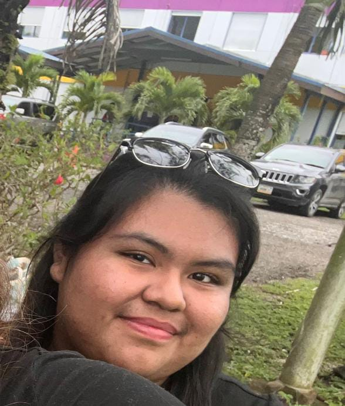

About Me!!💕
Name
My name is Dylanie Martinez. I am currently pursuing an Associates in I.T at the University of Belize.
High School
I attended Belmopan Comprehensive School.
Visit BCS WebsiteComputer Courses
I studied EDPM for my first 2 years and I.T for the remaining 2 years of high school, which built my computer and typing skills.
Why I.T?
I chose I.T because since I was young, I enjoyed video games with my older brother, so learning how things actually work has me very interested.
My programs!
1. BMI Calculator
2. Programs
3. Belize Game